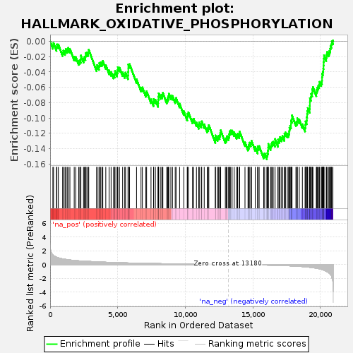
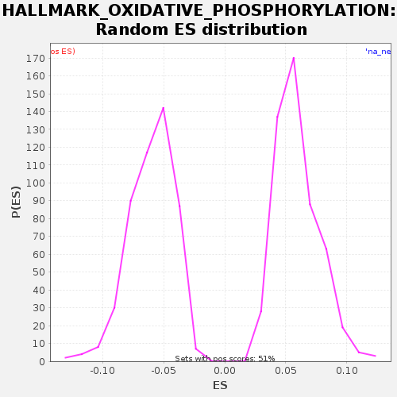

| | | Dataset | GSE18198_base_collapsed |
| Phenotype | NoPhenotypeAvailable |
| Upregulated in class | na_neg |
| GeneSet | HALLMARK_OXIDATIVE_PHOSPHORYLATION |
| Enrichment Score (ES) | -0.15395957 |
| Normalized Enrichment Score (NES) | -2.5540142 |
| Nominal p-value | 0.0 |
| FDR q-value | 1.5873015E-4 |
| FWER p-Value | 0.001 |
Table: GSEA Results Summary

Fig 1: Enrichment plot: HALLMARK_OXIDATIVE_PHOSPHORYLATION
Profile of the Running ES Score & Positions of GeneSet Members on the Rank Ordered List
| SYMBOL | TITLE | RANK IN GENE LIST | RANK METRIC SCORE | RUNNING ES | CORE ENRICHMENT | | 1 | NDUFS8 | NA | 203 | 1.392 | -0.0048 | No |
| 2 | PHYH | NA | 253 | 1.312 | -0.0021 | No |
| 3 | COX5B | NA | 471 | 1.080 | -0.0075 | No |
| 4 | NDUFA5 | NA | 501 | 1.046 | -0.0039 | No |
| 5 | NDUFA2 | NA | 609 | 0.975 | -0.0040 | No |
| 6 | SLC25A20 | NA | 925 | 0.826 | -0.0142 | No |
| 7 | OGDH | NA | 985 | 0.807 | -0.0120 | No |
| 8 | ALDH6A1 | NA | 1102 | 0.765 | -0.0126 | No |
| 9 | AFG3L2 | NA | 1155 | 0.748 | -0.0101 | No |
| 10 | NDUFC2 | NA | 1263 | 0.715 | -0.0102 | No |
| 11 | MPC1 | NA | 1332 | 0.697 | -0.0084 | No |
| 12 | ATP6V1D | NA | 1463 | 0.660 | -0.0097 | No |
| 13 | CYB5A | NA | 1782 | 0.592 | -0.0200 | No |
| 14 | TIMM17A | NA | 1895 | 0.573 | -0.0204 | No |
| 15 | NDUFB1 | NA | 2114 | 0.540 | -0.0258 | No |
| 16 | SDHD | NA | 2193 | 0.533 | -0.0246 | No |
| 17 | IDH3A | NA | 2269 | 0.523 | -0.0232 | No |
| 18 | MGST3 | NA | 2276 | 0.522 | -0.0184 | No |
| 19 | ATP5PO | NA | 2470 | 0.495 | -0.0227 | No |
| 20 | ATP6V1C1 | NA | 2528 | 0.488 | -0.0204 | No |
| 21 | ATP6V1H | NA | 2614 | 0.477 | -0.0195 | No |
| 22 | UQCR11 | NA | 2631 | 0.475 | -0.0152 | No |
| 23 | COX6C | NA | 2718 | 0.464 | -0.0144 | No |
| 24 | HCCS | NA | 2819 | 0.453 | -0.0142 | No |
| 25 | NNT | NA | 2858 | 0.448 | -0.0110 | No |
| 26 | COX7C | NA | 3442 | 0.390 | -0.0340 | No |
| 27 | MRPS11 | NA | 3482 | 0.386 | -0.0309 | No |
| 28 | LRPPRC | NA | 3615 | 0.373 | -0.0322 | No |
| 29 | COX6A1 | NA | 3641 | 0.372 | -0.0284 | No |
| 30 | NDUFS4 | NA | 3726 | 0.366 | -0.0274 | No |
| 31 | NDUFA4 | NA | 3828 | 0.361 | -0.0273 | No |
| 32 | COX17 | NA | 3898 | 0.353 | -0.0256 | No |
| 33 | NDUFB8 | NA | 4119 | 0.333 | -0.0311 | No |
| 34 | UQCRQ | NA | 4366 | 0.313 | -0.0380 | No |
| 35 | UQCRB | NA | 4512 | 0.304 | -0.0399 | No |
| 36 | ATP5MG | NA | 4691 | 0.292 | -0.0435 | No |
| 37 | COX7B | NA | 4775 | 0.287 | -0.0425 | No |
| 38 | COX5A | NA | 4803 | 0.285 | -0.0387 | No |
| 39 | UQCRFS1 | NA | 4954 | 0.272 | -0.0409 | No |
| 40 | NDUFB7 | NA | 4982 | 0.271 | -0.0372 | No |
| 41 | ATP6V0B | NA | 5011 | 0.270 | -0.0335 | No |
| 42 | ATP6V1E1 | NA | 5133 | 0.263 | -0.0344 | No |
| 43 | NDUFC1 | NA | 5365 | 0.250 | -0.0405 | No |
| 44 | VDAC3 | NA | 5522 | 0.242 | -0.0430 | No |
| 45 | MAOB | NA | 5581 | 0.239 | -0.0407 | No |
| 46 | PDHA1 | NA | 5763 | 0.229 | -0.0444 | No |
| 47 | MRPL35 | NA | 5773 | 0.228 | -0.0398 | No |
| 48 | MRPS15 | NA | 5784 | 0.228 | -0.0353 | No |
| 49 | COX4I1 | NA | 5785 | 0.228 | -0.0303 | No |
| 50 | NDUFA6 | NA | 5878 | 0.223 | -0.0297 | No |
| 51 | PRDX3 | NA | 6395 | 0.197 | -0.0495 | No |
| 52 | SLC25A5 | NA | 6726 | 0.183 | -0.0604 | No |
| 53 | PDK4 | NA | 6825 | 0.179 | -0.0601 | No |
| 54 | ATP6V1F | NA | 7083 | 0.169 | -0.0675 | No |
| 55 | COX7A2 | NA | 7139 | 0.167 | -0.0651 | No |
| 56 | ETFA | NA | 7465 | 0.154 | -0.0757 | No |
| 57 | ISCU | NA | 7652 | 0.148 | -0.0797 | No |
| 58 | NDUFA7 | NA | 7663 | 0.147 | -0.0751 | No |
| 59 | NDUFB4 | NA | 7791 | 0.142 | -0.0762 | No |
| 60 | COX11 | NA | 7987 | 0.135 | -0.0806 | No |
| 61 | ATP5MC2 | NA | 7996 | 0.135 | -0.0759 | No |
| 62 | ACAT1 | NA | 8019 | 0.134 | -0.0720 | No |
| 63 | COX8A | NA | 8038 | 0.133 | -0.0678 | No |
| 64 | ECHS1 | NA | 8192 | 0.127 | -0.0702 | No |
| 65 | NDUFS2 | NA | 8286 | 0.124 | -0.0696 | No |
| 66 | COX15 | NA | 8342 | 0.121 | -0.0673 | No |
| 67 | MTRF1 | NA | 8631 | 0.113 | -0.0761 | No |
| 68 | NDUFS7 | NA | 8694 | 0.111 | -0.0741 | No |
| 69 | ATP6V0E1 | NA | 8749 | 0.109 | -0.0716 | No |
| 70 | NDUFS1 | NA | 8784 | 0.108 | -0.0683 | No |
| 71 | NDUFA3 | NA | 8934 | 0.103 | -0.0704 | No |
| 72 | SURF1 | NA | 9055 | 0.100 | -0.0712 | No |
| 73 | NDUFV2 | NA | 9256 | 0.095 | -0.0758 | No |
| 74 | NDUFS6 | NA | 9320 | 0.093 | -0.0738 | No |
| 75 | SUCLG1 | NA | 9581 | 0.085 | -0.0813 | No |
| 76 | CPT1A | NA | 9892 | 0.076 | -0.0912 | No |
| 77 | ATP6V1G1 | NA | 10146 | 0.069 | -0.0984 | No |
| 78 | MRPS22 | NA | 10167 | 0.068 | -0.0943 | No |
| 79 | ATP5F1E | NA | 10235 | 0.066 | -0.0925 | No |
| 80 | NDUFA1 | NA | 10536 | 0.058 | -0.1020 | No |
| 81 | FDX1 | NA | 10621 | 0.056 | -0.1010 | No |
| 82 | NDUFB3 | NA | 10828 | 0.051 | -0.1059 | No |
| 83 | NDUFV1 | NA | 11000 | 0.046 | -0.1091 | No |
| 84 | ATP5F1C | NA | 11037 | 0.045 | -0.1058 | No |
| 85 | NDUFB6 | NA | 11184 | 0.042 | -0.1078 | No |
| 86 | ECI1 | NA | 11217 | 0.041 | -0.1043 | No |
| 87 | ATP5PD | NA | 11403 | 0.036 | -0.1082 | No |
| 88 | COX10 | NA | 11625 | 0.031 | -0.1139 | No |
| 89 | UQCR10 | NA | 11698 | 0.029 | -0.1123 | No |
| 90 | IDH1 | NA | 11743 | 0.028 | -0.1094 | No |
| 91 | RHOT1 | NA | 12227 | 0.019 | -0.1277 | No |
| 92 | NDUFB2 | NA | 12231 | 0.019 | -0.1228 | No |
| 93 | IDH2 | NA | 12385 | 0.016 | -0.1251 | No |
| 94 | CYC1 | NA | 12452 | 0.015 | -0.1233 | No |
| 95 | AIFM1 | NA | 12544 | 0.013 | -0.1226 | No |
| 96 | TIMM13 | NA | 12588 | 0.012 | -0.1197 | No |
| 97 | POLR2F | NA | 12619 | 0.011 | -0.1161 | No |
| 98 | ATP5PF | NA | 12966 | 0.004 | -0.1278 | No |
| 99 | SDHC | NA | 13040 | 0.003 | -0.1263 | No |
| 100 | MRPS12 | NA | 13093 | 0.001 | -0.1237 | No |
| 101 | SLC25A11 | NA | 13205 | -0.000 | -0.1241 | No |
| 102 | ATP5ME | NA | 13250 | -0.001 | -0.1212 | No |
| 103 | BAX | NA | 13281 | -0.002 | -0.1176 | No |
| 104 | HTRA2 | NA | 13359 | -0.003 | -0.1163 | No |
| 105 | COX7A2L | NA | 13468 | -0.005 | -0.1164 | No |
| 106 | GPX4 | NA | 13624 | -0.009 | -0.1189 | No |
| 107 | PDP1 | NA | 13798 | -0.012 | -0.1222 | No |
| 108 | UQCRC2 | NA | 13871 | -0.014 | -0.1206 | No |
| 109 | ETFB | NA | 13994 | -0.017 | -0.1215 | No |
| 110 | ABCB7 | NA | 14023 | -0.017 | -0.1178 | No |
| 111 | MDH1 | NA | 14419 | -0.025 | -0.1318 | No |
| 112 | ECH1 | NA | 14643 | -0.030 | -0.1376 | No |
| 113 | TIMM8B | NA | 14701 | -0.031 | -0.1353 | No |
| 114 | BDH2 | NA | 14741 | -0.032 | -0.1321 | No |
| 115 | SDHB | NA | 14847 | -0.035 | -0.1322 | No |
| 116 | HADHA | NA | 14902 | -0.038 | -0.1297 | No |
| 117 | ATP5PB | NA | 15176 | -0.047 | -0.1379 | No |
| 118 | OPA1 | NA | 15356 | -0.053 | -0.1415 | No |
| 119 | TCIRG1 | NA | 15364 | -0.054 | -0.1368 | No |
| 120 | SLC25A4 | NA | 15467 | -0.057 | -0.1367 | No |
| 121 | MRPL34 | NA | 15804 | -0.072 | -0.1479 | No |
| 122 | NDUFA8 | NA | 15874 | -0.076 | -0.1462 | No |
| 123 | TIMM50 | NA | 16037 | -0.083 | -0.1489 | Yes |
| 124 | ATP1B1 | NA | 16079 | -0.084 | -0.1459 | Yes |
| 125 | MRPL11 | NA | 16116 | -0.086 | -0.1426 | Yes |
| 126 | HSPA9 | NA | 16137 | -0.087 | -0.1385 | Yes |
| 127 | ISCA1 | NA | 16145 | -0.088 | -0.1338 | Yes |
| 128 | ATP5MF | NA | 16313 | -0.096 | -0.1369 | Yes |
| 129 | NDUFB5 | NA | 16358 | -0.097 | -0.1340 | Yes |
| 130 | MTX2 | NA | 16421 | -0.100 | -0.1319 | Yes |
| 131 | CYCS | NA | 16507 | -0.105 | -0.1310 | Yes |
| 132 | IDH3G | NA | 16642 | -0.111 | -0.1324 | Yes |
| 133 | ACAA2 | NA | 16643 | -0.112 | -0.1274 | Yes |
| 134 | SUCLA2 | NA | 16860 | -0.124 | -0.1328 | Yes |
| 135 | ATP5MC3 | NA | 16869 | -0.124 | -0.1282 | Yes |
| 136 | SLC25A3 | NA | 16963 | -0.129 | -0.1276 | Yes |
| 137 | COX6B1 | NA | 17012 | -0.132 | -0.1249 | Yes |
| 138 | NDUFS3 | NA | 17131 | -0.141 | -0.1256 | Yes |
| 139 | RHOT2 | NA | 17193 | -0.146 | -0.1235 | Yes |
| 140 | FH | NA | 17327 | -0.157 | -0.1249 | Yes |
| 141 | POR | NA | 17343 | -0.158 | -0.1206 | Yes |
| 142 | MDH2 | NA | 17414 | -0.163 | -0.1189 | Yes |
| 143 | ETFDH | NA | 17551 | -0.174 | -0.1204 | Yes |
| 144 | PDHB | NA | 17647 | -0.181 | -0.1200 | Yes |
| 145 | ATP6V0C | NA | 17692 | -0.185 | -0.1171 | Yes |
| 146 | IDH3B | NA | 17710 | -0.186 | -0.1129 | Yes |
| 147 | MFN2 | NA | 17760 | -0.192 | -0.1102 | Yes |
| 148 | RETSAT | NA | 17825 | -0.199 | -0.1083 | Yes |
| 149 | NQO2 | NA | 17826 | -0.199 | -0.1032 | Yes |
| 150 | BCKDHA | NA | 17894 | -0.204 | -0.1015 | Yes |
| 151 | ACADM | NA | 17899 | -0.205 | -0.0966 | Yes |
| 152 | PDHX | NA | 18188 | -0.235 | -0.1055 | Yes |
| 153 | CYB5R3 | NA | 18271 | -0.245 | -0.1044 | Yes |
| 154 | FXN | NA | 18293 | -0.247 | -0.1004 | Yes |
| 155 | ACO2 | NA | 18438 | -0.265 | -0.1023 | Yes |
| 156 | ATP5F1D | NA | 18665 | -0.297 | -0.1082 | Yes |
| 157 | ATP5F1A | NA | 18865 | -0.330 | -0.1127 | Yes |
| 158 | PMPCA | NA | 18890 | -0.334 | -0.1089 | Yes |
| 159 | NDUFAB1 | NA | 18902 | -0.337 | -0.1044 | Yes |
| 160 | TOMM22 | NA | 18987 | -0.356 | -0.1034 | Yes |
| 161 | TIMM10 | NA | 18996 | -0.357 | -0.0988 | Yes |
| 162 | DLAT | NA | 19018 | -0.361 | -0.0947 | Yes |
| 163 | UQCRH | NA | 19038 | -0.364 | -0.0906 | Yes |
| 164 | DLD | NA | 19066 | -0.370 | -0.0869 | Yes |
| 165 | CASP7 | NA | 19202 | -0.398 | -0.0884 | Yes |
| 166 | SDHA | NA | 19216 | -0.402 | -0.0840 | Yes |
| 167 | TIMM9 | NA | 19221 | -0.404 | -0.0792 | Yes |
| 168 | ATP5MC1 | NA | 19223 | -0.404 | -0.0742 | Yes |
| 169 | MRPL15 | NA | 19297 | -0.420 | -0.0727 | Yes |
| 170 | UQCRC1 | NA | 19315 | -0.425 | -0.0685 | Yes |
| 171 | HSD17B10 | NA | 19390 | -0.445 | -0.0670 | Yes |
| 172 | MRPS30 | NA | 19401 | -0.446 | -0.0625 | Yes |
| 173 | ACADSB | NA | 19449 | -0.458 | -0.0597 | Yes |
| 174 | ACAA1 | NA | 19698 | -0.535 | -0.0666 | Yes |
| 175 | ALAS1 | NA | 19727 | -0.546 | -0.0630 | Yes |
| 176 | ATP6AP1 | NA | 19781 | -0.570 | -0.0605 | Yes |
| 177 | ACADVL | NA | 19840 | -0.588 | -0.0583 | Yes |
| 178 | PHB2 | NA | 19905 | -0.618 | -0.0563 | Yes |
| 179 | GLUD1 | NA | 19937 | -0.628 | -0.0528 | Yes |
| 180 | NDUFA9 | NA | 20058 | -0.691 | -0.0535 | Yes |
| 181 | TOMM70 | NA | 20115 | -0.722 | -0.0512 | Yes |
| 182 | SLC25A12 | NA | 20123 | -0.725 | -0.0465 | Yes |
| 183 | CS | NA | 20132 | -0.729 | -0.0419 | Yes |
| 184 | GRPEL1 | NA | 20183 | -0.767 | -0.0393 | Yes |
| 185 | SUPV3L1 | NA | 20215 | -0.789 | -0.0357 | Yes |
| 186 | LDHB | NA | 20229 | -0.797 | -0.0313 | Yes |
| 187 | OAT | NA | 20241 | -0.804 | -0.0269 | Yes |
| 188 | DECR1 | NA | 20253 | -0.815 | -0.0224 | Yes |
| 189 | OXA1L | NA | 20269 | -0.829 | -0.0181 | Yes |
| 190 | SLC25A6 | NA | 20431 | -0.968 | -0.0208 | Yes |
| 191 | VDAC2 | NA | 20458 | -0.999 | -0.0170 | Yes |
| 192 | ATP5F1B | NA | 20496 | -1.041 | -0.0138 | Yes |
| 193 | IMMT | NA | 20621 | -1.200 | -0.0147 | Yes |
| 194 | LDHA | NA | 20677 | -1.302 | -0.0124 | Yes |
| 195 | HADHB | NA | 20726 | -1.383 | -0.0096 | Yes |
| 196 | VDAC1 | NA | 20751 | -1.446 | -0.0058 | Yes |
| 197 | MTRR | NA | 20813 | -1.625 | -0.0037 | Yes |
| 198 | GOT2 | NA | 20840 | -1.803 | 0.0001 | Yes |
| 199 | GPI | NA | 20925 | -2.584 | 0.0011 | Yes |
Table: GSEA details [plain text format]

Fig 2: HALLMARK_OXIDATIVE_PHOSPHORYLATION: Random ES distribution
Gene set null distribution of ES for HALLMARK_OXIDATIVE_PHOSPHORYLATION